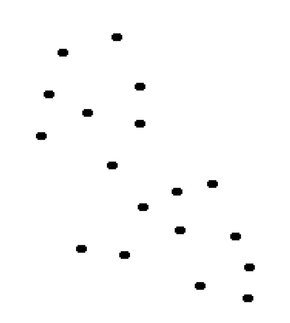
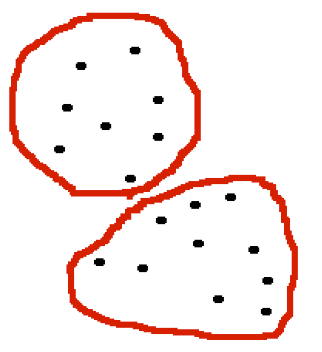
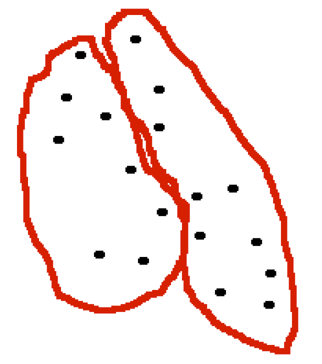
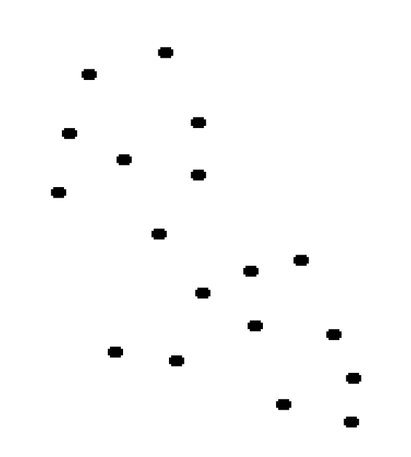
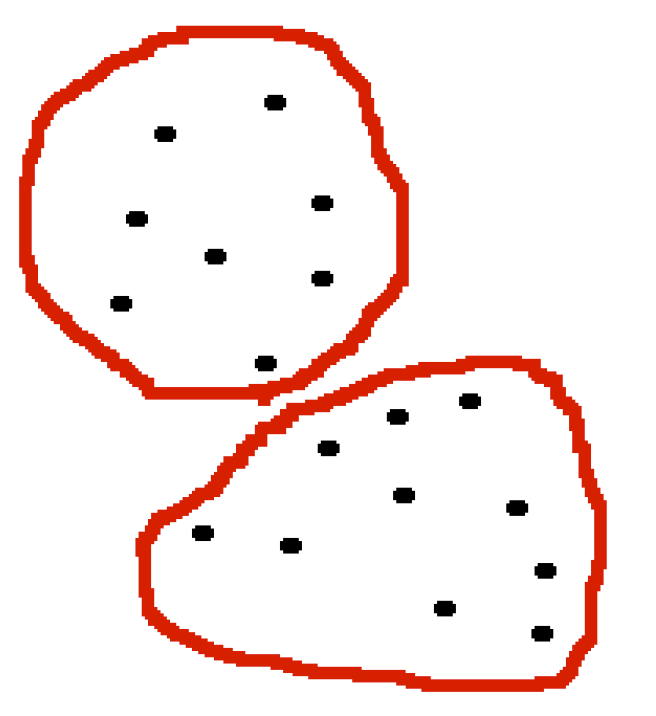
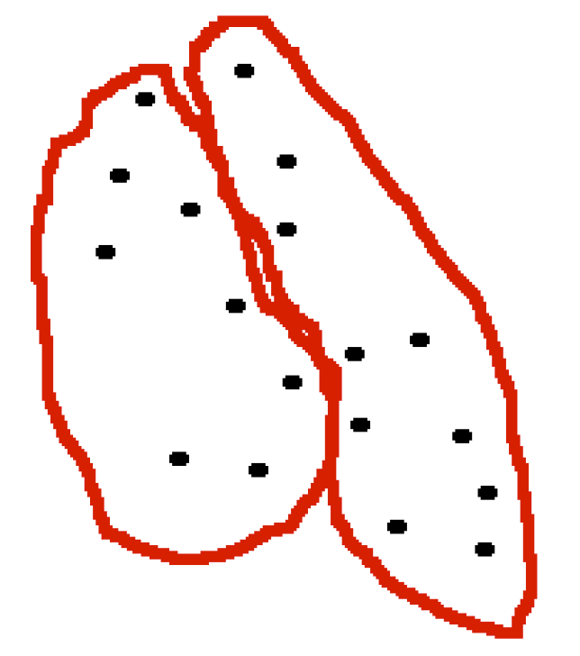
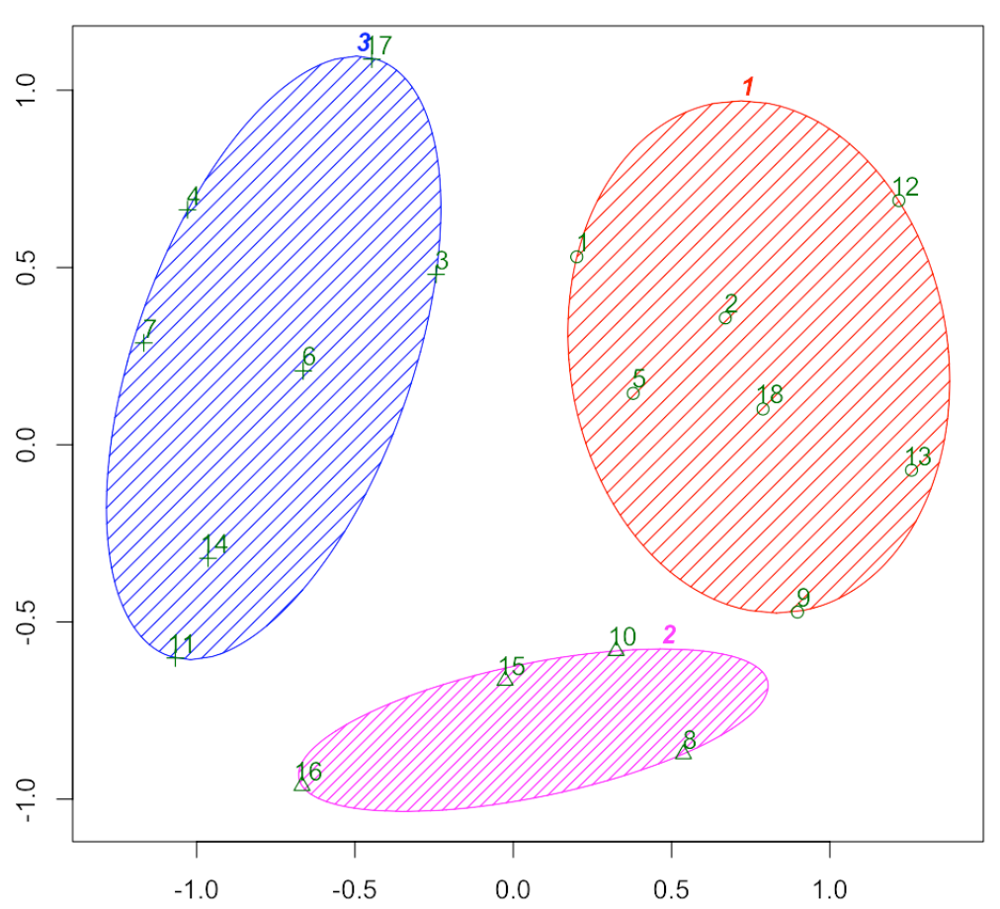

Dado un conjunto de objetos, queremos clasificarlos en grupos (clusters) basándonos en sus semejanzas y diferencias.
Algunas aplicaciones en biología:
Clasificación jerárquica de organismos (relacionada con la filogenia).
Agrupamiento de genes con patrones de expresión similares.
Agrupamiento de genes por similitud secuencial.
Agrupamiento de proteínas por similitud estructural.
Principios básicos
Homogeneidad: Objetos dentro de un mismo clúster han de ser semejantes (próximos).
Separación: Objetos dentro de clústers diferentes han de ser lejanos.



¿Cómo formalizamos estos principios intuitivos?


El algoritmo de las \(k\)-medias (\(k\)-means) busca una partición del conjunto de objetos, representados como elementos de un espacio \(\mathbb{R}^n\) en un número fijo \(k\) de clusters.
Estos clústers se identifican por medio de sus puntos medios (means).
Recordad que dado \(\mathbf{x}=(x_1,\ldots,x_n)\in \mathbb{R}^n\), \[ \|\mathbf{x}\|^2=\sum_{i=1}^n x_i^2\in \mathbb{R} \] y que dados \(\mathbf{x},\mathbf{y} \in \mathbb{R}^n\), \(\|\mathbf{x}-\mathbf{y}\|\) es la distancia euclidiana entre \(\mathbf{x}\) y \(\mathbf{y}\).
Fijamos el número de clústers \(k\)
Dados puntos \(\mathbf{x}_1,\ldots,\mathbf{x}_p\in \mathbb{R}^n\), el objetico es encontrar \(k\) puntos \(\mathbf{c}_1,\ldots,\mathbf{c}_k\in \mathbb{R}^n\) que minimicen \[ SS_C(\mathbf{x}_1,\ldots,\mathbf{x}_p; k)=\sum_{i=1}^p\min_{j=1,\ldots,k} \|\mathbf{x}_i-\mathbf{c}_j\|^2 \] Entonces cada \(\mathbf{c}_j\) definirá el clúster formado por los \(\mathbf{x}_i\) que están más cerca más cerca de él que de cualquier otro \(\mathbf{c}_l\): \[ C_j=\{\mathbf{x}_i\mid \|\mathbf{x}_i-\mathbf{c}_j\|<\|\mathbf{x}_i-\mathbf{c}_l\|\mbox{ para todo }l\neq j\} \] y \[ SS_C(\mathbf{x}_1,\ldots,\mathbf{x}_p; k)=\sum_{j=1}^k\sum_{\mathbf{x}_i\in C_j} \|\mathbf{x}_i-\mathbf{c}_j\|^2 \]
Algoritmo de Lloyd
Escogemos \(\mathbf{c}_1,\ldots,\mathbf{c}_k\) (como queramos).
Asignamos cada punto \(\mathbf{x}_i\) al clúster \(C_j\) definido por el centro \(\mathbf{c}_j\) más cercano.
Sustituimos cada centro \(\mathbf{c}_j\) por el punto medio de su clúster \(C_j\):
\[ \mathbf{c}_j= \Big(\sum_{\mathbf{x}_i\in C_j} \mathbf{x}_i\Big)/|C_j| \]
El resultado depende de los \(\mathbf{c}_1,\ldots,\mathbf{c}_k\) iniciales.
Este algoritmo no tiene porque dar un clustering óptimo. Conviene repetirlo varias veces con diferentes valores iniciales.